Good day, we are halfway through the year. What does this mean? Death comes for us all i guess. Im now finishing this on the 30th and ive just found out they are kicking me out in 90 days to sell the place and im fuming. I hate renting. Anyway now june
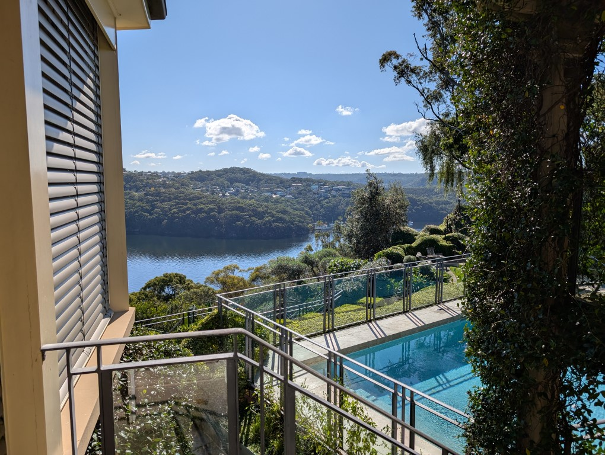
Started the month out helping clean my grandparents place while theyre away
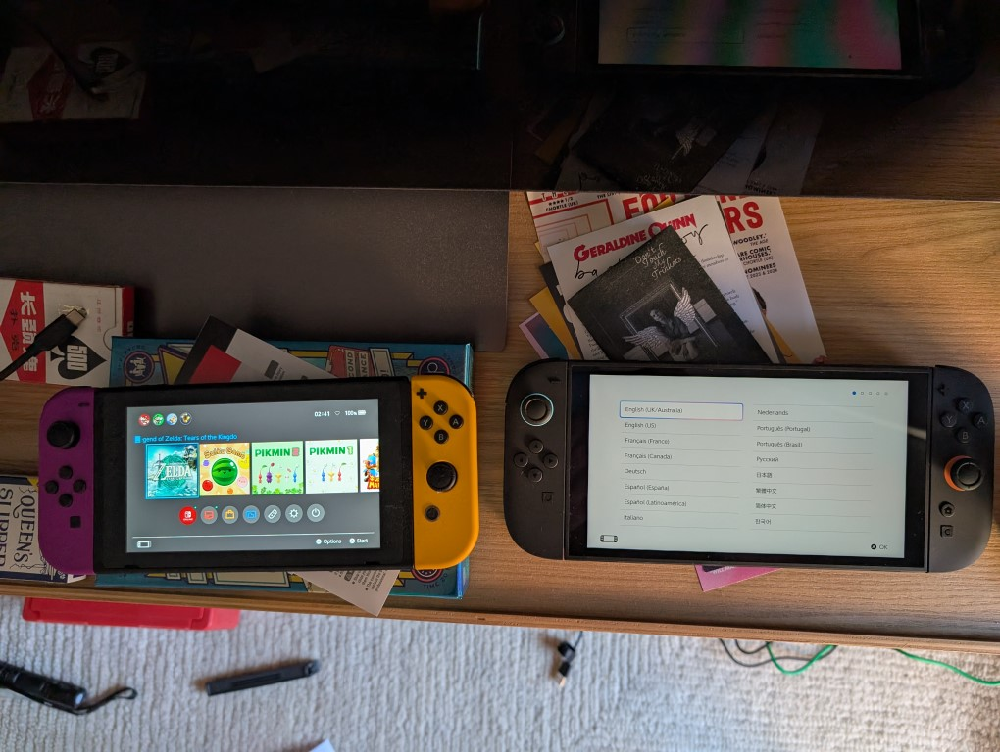
Got to the JBHIFI at fuckin 7:15am to get my switch 2 preorder its a beaut
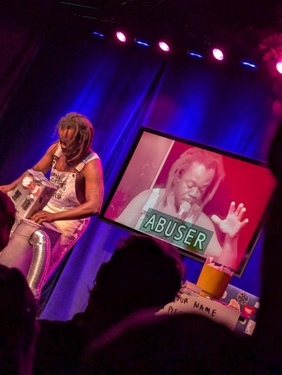
Saw Demi Adejuyigbe’s show - was good
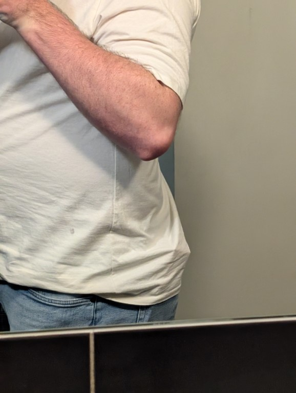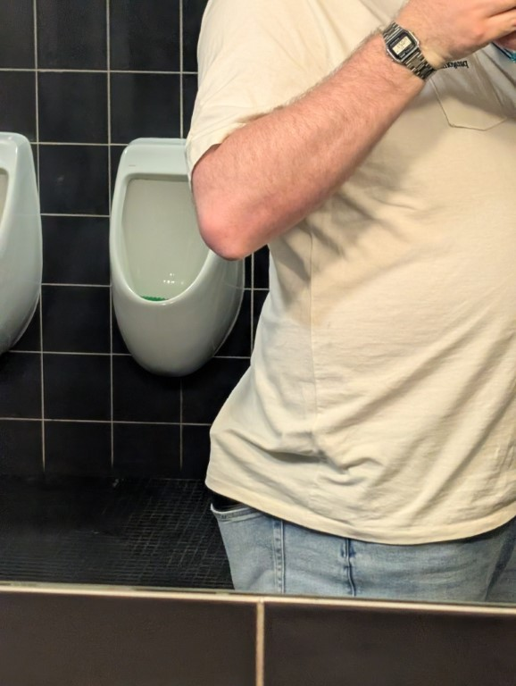
Saw the new wes anderson movie and filled my back pockets with snacks and it was so suspicious to have such a lumpy ass
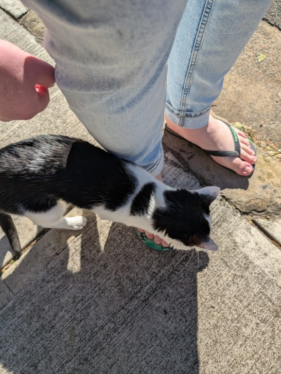
Met a cat while i was walking to get lunch, it approached me and wanted to be pet it was adorable
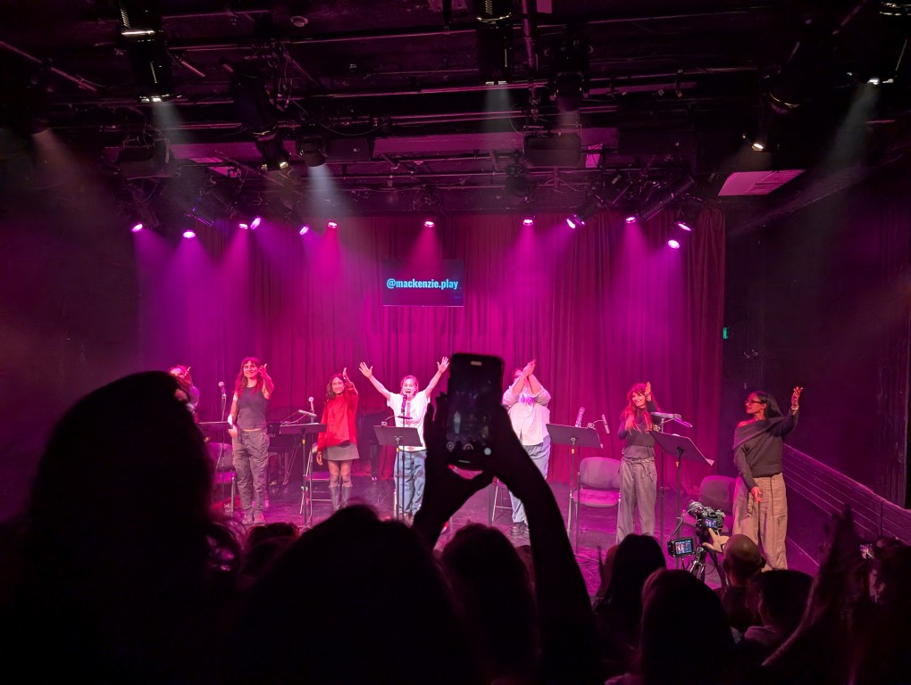
Saw a script reading of a new play from the creator of the theatre show FANGIRLS - was fun! An interesting take on macbeth that is by the books and like most adaptations when you slightly know what the shakespear og plot is you go “how the fuck are they going to get there” and then they do in interesting ways
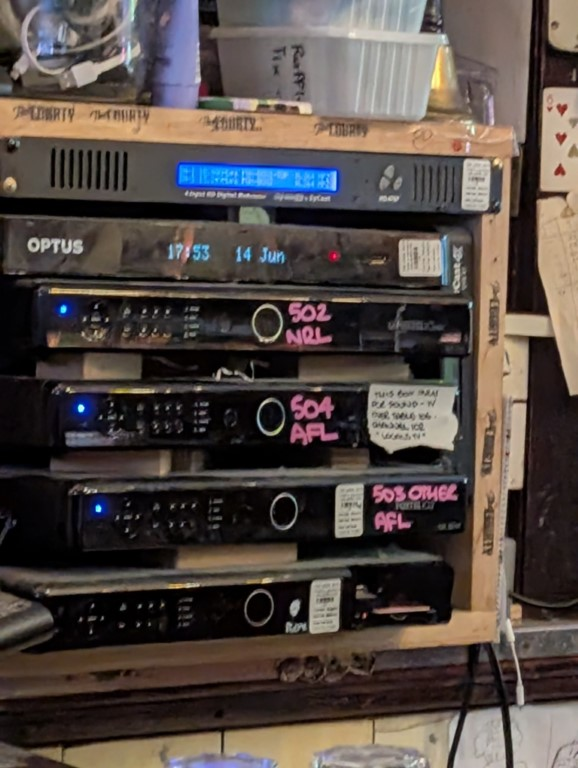
Went to a pu and saw these beauts, this is gonna be costing them a fortune just to play spots on the tvs for all the blokes
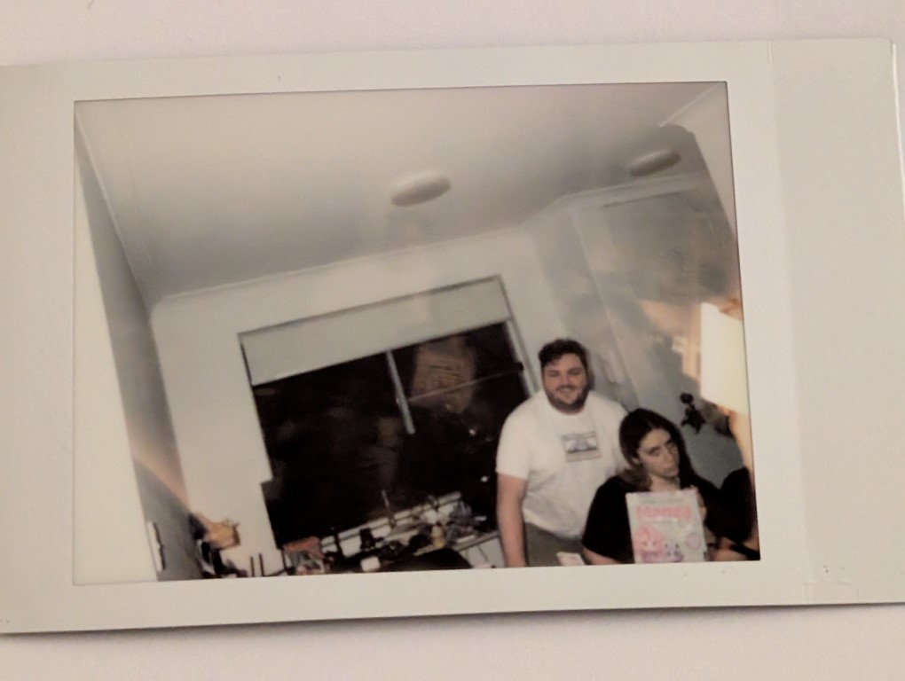
Hosted a painting night for davis’s birthday, this polaroid was taken on accident cropping out other people but i adore its energy netherhtheless
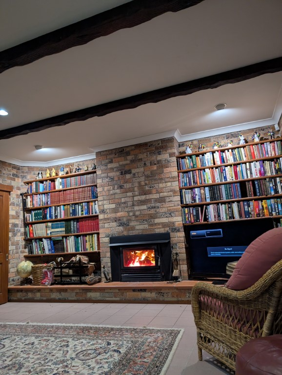
Finally went up to the hunter to help my mum and uncle in clearing out the house. Shit sucks.
Look. I am typing this during a work meeting mainly for myself? Idk I gotta just get this out because I also know this is nothing compared to what women or other queers get but hey baby's first harassment has got to me. Oh also it was on the metro.
Also I'm just proud of myself for in the moment handling it well by drinking heavily and not peeling off my nail polish in the bathroom. Ok its been a few more days and really i think the bit that got to me was after it happened i spiralled and went “damn.
If i got stabbed then thats a hell of a way to come out to my family” and i think that anxiety of it escalating (which it didnt!) just spooked me and have i even said what happened idk, i know sarah joked that it would be going in here but fuck it, it is now because like.
Idk homophobia scary and like boo to the youths ok im just gonna copy a message i sent to a few people because i don't wanna get facts wrong and also idk im gonna stop thinking about this i have another fucking inspection to worry about and i just undid my nails because they wereall scruffed up from me cleaning and like. Fuck i just need a holiday
Sun 5:46 PM
You sent
Just had a youth on the train go "bro are you gay" becuase of my nails and O went "yea" and he scoffed and said "oh that's disgusting" And then the much smaller lad with him went "bro what's wrong with you" and came back to apologise to me
(now i assume it was because of the nails and not the cropped top i was wearing but who knows)
Anyway sorry that was a lot uhh, the next part is me slightly loosing my mind over dexter but first i wanna bring up a lil story i remembered because someone once asked me like “how do you think your bi” and i realised that when i was like 15? 16? I was in victoria down at queenscliff victoria (down past gelong, the estblishement is here but it wasnt this place but idk don't stalk me https://maps.app.goo.gl/M3FgVomy76PRHYe89 ) and while there we went up to the new pop up roast chicken reasturant. They were known for their roast chicken and gravy rolls (They were great) (Also i was angry at my fucking father for ordering the salt and pepper squid and then complaining that it wasnt good like it WAS A CHICKEN POPUP) but there was a waitor there who wouldve been the same age as me who was wearing a demin apron and shorts. And i remmeber at the time being so fucking embarassed because he seemed so cool, but absoltuely i just had the hots for him and didnt know what that was about because like why would i like men im not gay thats a thing i would never be (jims the camera) anyway enough of this onto dexter
Ok so i realised that you could pay money for bootlegs instead of having to grovel or trade and uh, now i have a small collection, have i watched many of them yet no i havent. But also - theres a big culture of not leaking so if you want any i absolutely never could. Like if you were to ask me what i had i would never tell you.
So I found out this game exists and immediately purchased it. Then the next day I went “wait where is the N64 that I have?” Important note: this is not my childhood N64, my first console was the PlayStation 2 or technically the Gameboy colour but I digress. In like year 4 my mum's friend was moving and there was an N64 in a milk crate with 1080? I think that was the games name. And I said “oh that's cool can I borrow that” and they said sure. And I've had it ever since. Now the fun thing is that in the move I've managed to misplace the cables so I went to the games men and bought cables going “no I'm not spending $70 on a N64 to HDMI cable that is nonsense of course my tv has composite inputs”. Anyway I got home and found out I have four HDMI plugs and an aerial input so I started googling. Annoyingly everyone on Reddit recommended the same fucking upscaller (takes the input of old console and makes it digital for new tv) which was gonna be like $500 bucks minimum (and the fucking store owner was like “no I am not lowering my shipping costs to Australia lol” so I was angry at them) - then finally I found another Australian lamenting about this and they were pointed to the fact on AliExpress there's a knock off box for $45 and I was so happy. A week later it arrived. Plugged it in and was excited to turn on the console. And just bars...... 2 hours later of plugging and unplugging the console I had to torn apart and then I remembered it's a console from the 90s. One quick blowie into the expansion port later and it was working fine. So anyway I'm a gamer.
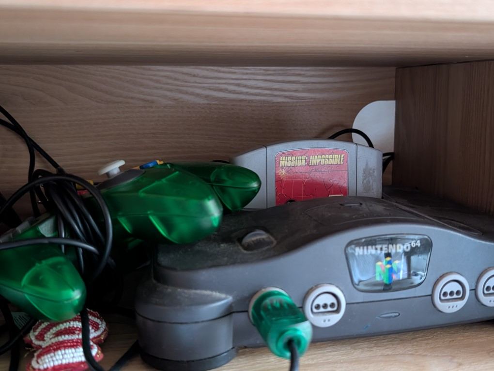
Ok dexter can we talk about dexter ok good because im gonna talk about dexter - im only 2 season in and it consumes me. So to start off with this ran from 2007 to 2013 and had 8 seasons.
All 12 episodes being about an hour long. So thats 96 hours of dexter. Dexter stars dexter morgan as an man with no emotions but the desire to kill but also he is just so charming? The man puts on a mask so well and so many points im like “dang this is obviously an mask but its so charming and believable” but wait you may have heard me say before that there are only 96 hours well nope there are 3 more (tehcnically 2 but the third is about to be released) the first is a sequel show set in the modern day and the 2nd is a prequel which is confirmed to get a second season.
The third is a sequel to the sequel which makes it a sequel to dexter but now his in new york. Ok so the first thing to note is this show is set in florida so everyone is so fucking sweaty its the most realistic shit ive ever seen, and also so many times it has camera shots which are so effective at their job of making you feel uncomfortable but sadly thats only in the first few eps of season 1. Eventually it goes bland anyway the other fun thing is finding out that the show is based on a book, now you might go “oh so all 8 seasons are based on the books”
NOPE SEASON 1 ENDS WHERE THE BOOK ENDS. 11 SEASONS OF GOING OFF THEIR OWN RAILS.
Ok so heres a fun thing about shows that run for this long, eventually the get a new showrunner and then the new person comes in and wants to make a big swing in the story to make there mark. So like for example you might hear the storyline of “dexter has a surprise brother who is also a serial killer and they both have their dark passanger because they were trapped in a shipping container while their mother was killed” and go “oh so thats like a season 4 or 5 reveal right?”
NOPE END OF SEASON 1. 11 EPISODES WITH DEXTER MORGAN AND YOU LEARN THIS SHIT.
its wild! It does feel earned but also the show has the energy of something thats not run out of steam but theyre already looking concerned at the coal supplies. Ok so this is scatter shot but a real funny thing about shows that go for this long is like, every time someones about to be like “dexter i know youre a serial killer” its like.
Ok but thats clearly not going to happen? There are 8 seasons of this show his not gonna get put in prison at the end of s2. Which ins ome ways make it way more interesting because its not like “oh my god is he gonna get out of this” but is way more “how the fuck are they gonna bend over backwards to get him out of this”
Anyway another thought is that the show is actually funny, the amount of times this grown ass man says “Harrys Rules” - Harry of course being his cop foster and then adopted farther who taught his son dexter that he could let out his dark passenger but only in ways that would punish criminals but the way this 35 year old man talks about his daddies rules are just outstanding.
Also the show is actually funny? There are so many moments that actually made me chuckle. Like while i wrote this a noterry just said “were all going to die eventually” and like damn its nice to watch stuff. Another fun thing is that there are a few shots in one episode where dexter is driving around and it is so clearly shot on a handycam because the rest of the show is shot on 35mm so it looks crisp and HD so the wierd like “oh its 2007 we don't need to worry about HD” shots look so outta place.
Theres a whole lot of this show that also iso so good because the lighting is like, done well? Like done by someone who cares and knows what their doing and their job isnt just “make everything lit up” but there are shadows! Bits where its very bright! And then parts where people are in shadow its so nice.
Ok also im too lazy to figure out how to make my friends american paramount plus subscription work in australia so im watching this all on plex and there are 0 subtitles. Like normally fine but also, there are so many bits where people speak spanish and i feel so clueless but also dexter feels clueless so idk feels appropriate. Also it fucked up season 2 episode 6 & 7 and swapped them with 8&9 - which is annoying af. Like it kept saying “yes this is file dexter.s02.e06” but then it was playing ep 8. I had to watch episode 8 to actually watch episode 6.
The finale episode of season 2 has them re-creating the title sequence which is interesting because like “oh its full circle” but then they just keep using it for season 3 and its like. You did it! He got away with something and then was like “im on top of the world”
Also theres a shot where his being escorted to the cop shop by some fbi people and it cuts to him in a snoricam (the camera rig you use to make the mitchell and webb sir digby chicken cesar shots) and it broke me for a full minute i had to pause it and film it (i dunno how to put videos into here so just enjoy this pic of it, I FORGOT ABOUT GIFS, what you don't get in this is the audio of me laughing, if the gif doesnt work let me know and ill work out how to share it?)
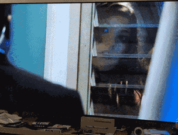
Now a few things about binging this - the fucking episodes start with like 3 minutes of recaps and then a 90 second theme song so or some eps i end up skipping 5 mins into the episode to just start the new episode.
Ok so in conclusion, new dexter is coming out so im desperaelty trying to watch 8 seasons of 2007 tv and its fun. But also i know that i probably wont be feeling the same way by like season 7 or 8 because i know it goes bad and like. Ohfa doofa
Also im partially watching this because of this tweet
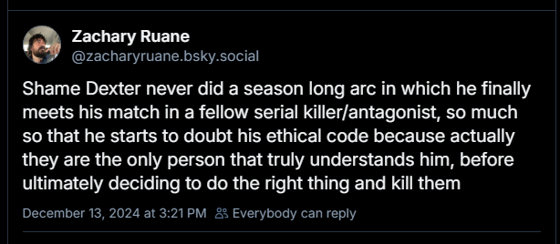
Ok update, s3? Eh - sorta boring and sorta meandering in the most boring ways. S4 ont he other hand ? jon lithgow just said cunt and faggot to a guy he is such a cool villain and has made the show infinitely more watchable i get why people say this is the best one
Welp. september 28th is my kick out day, rentals here seem to be shit (i fucking love the area im in) so idk what im gonna do but somethings gonna happen i guess.